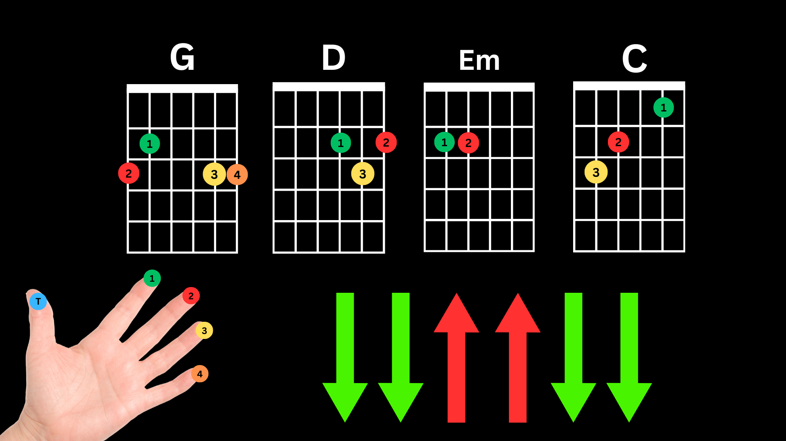

You’ll find everything you need to start playing the guitar from scratch. We’ll cover the basics, from how to hold and tune your guitar to learning simple chords and strumming patterns. Each lesson is designed to be clear and approachable, so you can go at your own pace.
The top part of the guitar where the tuning pegs are located. This is where you tune each string.
Small knobs on the headstock that you turn to tighten or loosen each string, adjusting its pitch.
A small strip between the headstock and neck, guiding the strings and holding them at the correct height.
The long part of the guitar extending from the body. This is where you’ll place your fingers to play different notes and chords.
Thin metal strips spaced along the fretboard. Each fret represents a different note, with smaller intervals as you move up the neck.
The main part of the guitar that resonates sound. In acoustic guitars, the body is hollow, while in electric guitars, it’s often solid.
The circular hole in the body of an acoustic guitar. It amplifies the sound as you play.
A protective plate on the body under the strings, preventing scratches from strumming.
Located on the body of the guitar, this part holds the strings in place and transfers their vibrations to the body. Acoustic guitars may have a saddle on the bridge, while electric guitars often have saddles for each string.
A part of the bridge that supports the strings. On acoustic guitars, it helps maintain string height and intonation.
To tune, use a guitar tuner or tuning app. Play each string individually and adjust the tuning peg to reach the correct pitch. Regular tuning helps keep your sound accurate and makes playing along with lessons, songs, or other musicians easier.
Chord diagrams help you understand where to place your fingers on the fretboard. Here’s how to read them:
Use the pads of your fingers, not the tips, to press down the strings. Keep your fingers as close to the fret as possible without being on top of it.
Be mindful of your other fingers not accidentally muting adjacent strings. For example, when pressing a chord, your fingers should arch enough to avoid touching other strings unintentionally.
Apply enough pressure to get a clean sound, but not too much that it makes the strings buzz.
To hold the guitar correctly, sit up straight with the guitar body resting on your thigh (left thigh for classical position, right for casual). Angle the neck slightly upward. Use your strumming arm to lightly press the guitar body against you, keeping it stable. Your fretting hand should be relaxed and positioned to move freely along the neck without holding up the guitar.
Use your thumb and index finger for control. For downstrokes, let your fingernails brush the strings; for upstrokes, use the pad of your index finger.
Place the pick between your thumb and index finger. Hold it firmly but not too tight. The pointed end should stick out slightly, angled toward the strings. Keep your wrist loose for smooth strumming or picking.
Use the back of your nails (usually the index or middle finger) to lightly brush down across the strings. Keep your fingers and wrist relaxed for a natural, even tone.
Use the pad of your index finger to brush upward across the strings gently.
To play the strumming pattern of “down, down, up, up, down, down”, start by forming the G chord. Begin with two downstrokes, strumming all the strings. Follow with two light upstrokes, then another downstroke, and finish with one last downstroke. Keep your wrist relaxed and stay consistent with the rhythm to create a smooth, flowing sound.
The G, Em, C, and D chords are essential for beginners and can be used to play countless songs. Practice these chords with a simple strumming pattern like “down, down, up, up, down, down” to build smooth transitions and rhythm.
Practicing these chords with the strumming pattern will help you master smooth changes and get a feel for basic rhythm and song structure.
“One Day” by Matisyahu is a great song for beginners to practice using the G, Em, C, and D chords along with the “down, down” strumming pattern. Start slowly, focusing on smooth chord changes, then build up speed as you get comfortable. Check out the video below to follow the tempo and rhythm, and use the lyrics and chords provided to play along.
G D Em C
G D Em C
G D Em C
Sometimes I lay under the moon, I thank God I'm breathin'
G D Em C
Then I pray don't take me soon, 'cause I am here for reason
G D Em C
Sometimes in my tears I drown, but I never let it get me down
G D Em C
So when negativity surrounds, I know someday it'll all turn around because
G D Em C
All my life I been waiting for, I been praying for, for the people to say
G D Em C
That we don't wanna fight no more, there'll be no more wars, and our children will play
G D Em C
One day, one day, one day, oh oh oh
G D Em C
One day, one day, one day, oh oh oh
G D Em C
It's not about win or lose, 'cause we all lose when they feed on the
G D Em C
Souls of the innocent, blood-drenched pavement, keep on movin' though the waters stay ragin'
G D Em C
In this maze you could lose your way, (your way)
G D Em
It might drive you crazy, but don't let it phase you, no way, no way
G D Em C
Sometimes in my tears I drown, (I drown) but I never let it get me down (get me down)
G D Em C
So when negativity surrounds, (surrounds) I know someday it'll all turn around because
G D Em C
All my life I been waiting for, (waiting for,) I been praying for, for the people to say
G D Em C
That we don't wanna fight no more, (fight no more) there'll be no more wars, and our children will play
G D Em C
One day, one day, one day, oh oh oh
G D Em C
One day, one day, one day, oh oh oh
G D Em C
One day this all will change, treat people the same, stop with the violence, down with the hate
G D Em C
One day we'll all be free, and proud to be, under the same sun singin' songs of freedom like
G D Em C
Wye oh Wye oh oh oh
G D Em C
Wye oh Wye oh oh oh
G D Em C
All my life I been waiting for, I been praying for, for the people to say
G D Em C
That we don't wanna fight no more, there'll be no more wars, and our children will play
G D Em C
One day, one day, one day, oh oh oh
G D Em C
One day, one day, one day, oh oh oh
G D Em C
G D Em C G
"Perfect" by Ed Sheeran introduces a new chord sequence and strumming pattern, giving you practice with variety and timing. This song uses the G, Em, C, and D chords but follows a different strumming pattern, which you’ll hear in the video below. Take your time to practice both the chord changes and rhythm until you feel comfortable, and use the provided lyrics and chords to play along accurately.
G
G Em
I found a love for me
C D
Darling, just dive right in, and follow my lead
G Em
Well, I found a girl beautiful and sweet
C D
I never knew you were the someone waiting for me
G
Cause we were just kids when we fell in love
Em C G D
Not knowing what it was, I will not give you up this ti-ime
G Em
Darling just kiss me slow, your heart is all I own
C D
And in your eyes you're holding mine
Em C G D Em
Baby, I'm dancing in the dark, with you between my arms
C G D Em
Barefoot on the grass, listening to our favourite song
C G D Em
When you said you looked a mess, I whispered underneath my breath
C G D G
But you heard it, darling you look perfect tonight
|(G) D Em D | C D |
G Em
Well, I found a woman, stronger than anyone I know
C D
She shares my dreams, I hope that someday I'll share her home
G Em
I found a love, to carry more than just my secrets
C D
To carry love, to carry children of our own
G Em
We are still kids, but we're so in love, fighting against all odds
C G D
I know we'll be alright this ti-ime
G Em
Darling just hold my hand, be my girl, I'll be your man
C D
I see my future in your eyes
Em C G D Em
Baby, I'm dancing in the dark, with you between my arms
C G D Em
Barefoot on the grass, listening to our favourite song
C G D
When I saw you in that dress, looking so beautiful
Em C G D G
I don't deserve this, darling you look perfect tonight
|(G) | G | Em | % |
| C | % | D | % |
Em C G D Em
Baby, I'm dancing in the dark, with you between my arms
C G D Em
Barefoot on the grass, listening to our favourite song
C G D Em
I have faith in what I see, now I know I have met an angel
C G D
In person, and she looks perfect
G C D D G
I don't deserve this, you look perfect tonight
|(G) D Em D | C D | G
These progressions combine chords like G, Em, C, D, Am, E, Dm, and A to help you build muscle memory and improve transitions. Use them to refine your strumming, timing, and confidence as you play.
Suggested weekly practice schedule for college students and those with busy work schedules.
| Day | Practice Focus | Time (Minutes) |
|---|---|---|
| Monday | Guitar Anatomy & Tuning | 15-20 |
| Tuesday | Reading Chords & Strumming | 20 |
| Wednesday | Practice Basic Chords (G, Em, C, D) | 20-25 |
| Thursday | First Song: One Day (Matishayu) | 25 |
| Friday | Second Song: Perfect (Ed Sheeran) | 25 |
| Saturday | Practice Other Chord Progressions & Strumming (A, Am, Dm, E) | 20-25 |
| Sunday | Review & Play Through Songs/Chords | 30 |
You’ve mastered the basics and are now ready to take on more challenging skills in the intermediate section. This next step will help you expand your techniques, explore new chords, and improve your rhythm. Keep up the great work, and let’s continue building your guitar skills to the next level!